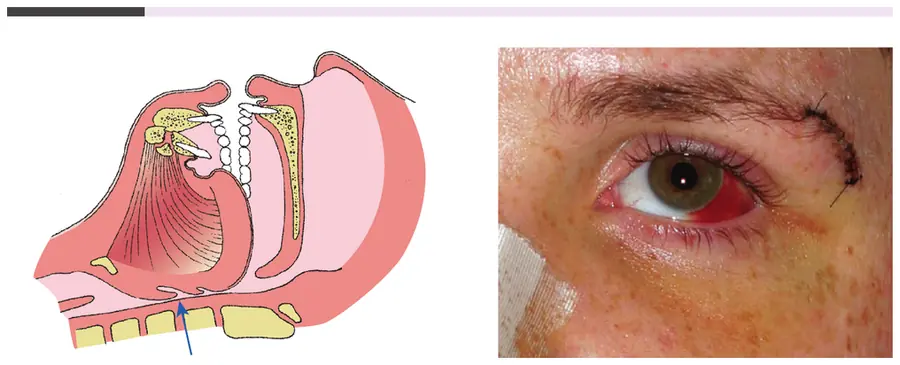

نسخه استخراجشده؛ ترجمه یا تأیید علمی انجام نشده است. وضعیت: captured
یک قاعدهی ترتیبی که کل این درس بر آن استوار است: پیش از تکمیل شرححال و ارزیابی تفصیلی ناحیهی صورت، باید به آسیبهای بحرانی که میتوانند تهدیدکنندهی حیات باشند رسیدگی شود.

گام اول — پایداری قلبی-ریوی: نخستین گام در ارزیابی بیمار تروما، سنجش پایداری قلبی-ریوی با اطمینان از باز بودن راه هوایی و تهویهی کافی ریههاست. علائم حیاتی شامل تعداد تنفس و نبض و فشار خون باید گرفته و ثبت شوند.
و در همین ارزیابی اولیه (بررسی نخست)، مشکلات دیگر تهدیدکنندهی حیات مانند خونریزی بیشازحد هم باید رسیدگی شوند — با اقدامات فوری مانند پانسمان فشاری، پکینگ، و کلمپ کردن رگهایی که بهشدت خونریزی میکنند، در سریعترین زمان ممکن.
گام دوم — ستون فقرات گردنی، و دلیلی که باید بدانی: پس از آن، ارزیابی وضعیت عصبی بیمار و ارزیابی ستون فقرات گردنی باید کامل شود. و دلیلش روشن است:
نیروهایی که بهقدر کافی شدید باشند تا شکستگی اسکلت صورت بسازند، اغلب به ستون فقرات گردنی هم منتقل میشوند.
و قاعدهی کلی درمان: درمان آسیبهای سر و گردن عموماً باید تا زمانی که ارزیابی و سنجش و پایدارسازی کامل بیمار انجام شود به تعویق بیفتد — هرچند برخی درمانهای اولیه اغلب برای پایدار کردن بیمار لازماند.
مدیریت راه هوایی «حیاتی» است — و مکانیسم دقیقش را باید بدانی:
شکستگی استخوانهای صورت اغلب توانایی بیمار در حفظ راه هوایی را بهشدت مختل میکند، بهویژه وقتی بیمار بیهوش یا کاملاً به پشت خوابیده است.
و سازوکار مشخصش: شکستگیهای شدید مندیبل — بهویژه شکستگیهای دوطرفه یا خردشده — میتوانند جابهجایی خلفی مندیبل و زبان را بسازند، که به انسداد راه هوایی فوقانی میانجامد.
و راهحلها، از سادهترین تا تهاجمیترین:
و چهار چیزی که باید بیدرنگ از راه هوایی برداشته شوند: هر وسیلهی پروتزی، دندانهای کندهشده، قطعات استخوان کاملاً کندهشده، یا هر دبری دیگر — چون همگی میتوانند به انسداد راه هوایی کمک کنند.
و دو اقدام دیگر:
و یک یادآوری دربارهی گسترهی آسیب: آسیبهای ناحیهی صورت میتوانند نهتنها استخوانهای صورت، بلکه بافت نرم مانند زبان یا نواحی فوقانی گردن را هم درگیر کنند — یا با آسیبهایی مانند شکستگی حنجره همراه باشند.
و سه نکته دربارهی شیوهی کار: ارزیابی فیزیکی ساختارهای صورت تنها پس از یک ارزیابی فیزیکی کلی انجام میشود که قلب و ریه، وضعیت عصبی، و سایر نواحی آسیب احتمالی از جمله قفسهی سینه، شکم و لگن را دربر میگیرد. چون بیمار با آسیبهای متعدد اغلب به ارزیابی چند متخصص نیاز دارد، تیم تروما در اورژانس بیمارستانهای بزرگ استاندارد شده است: جراحان عمومی و متخصصان جراحی قلب و قفسهی سینه، عروق، ارتوپدی، مغز و اعصاب و بیهوشی، و نیز جراحان فک و صورت، چشمپزشکان، متخصصان گوش و حلق، جراحان پلاستیک و اورولوژیستها. و خود ارزیابی صورت باید سازمانیافته و ترتیبی باشد: صورت و جمجمه را برای پارگی، ساییدگی، کوفتگی، نواحی ادم یا هماتوم، و نقصهای احتمالی کانتور با دقت بازرسی کن.